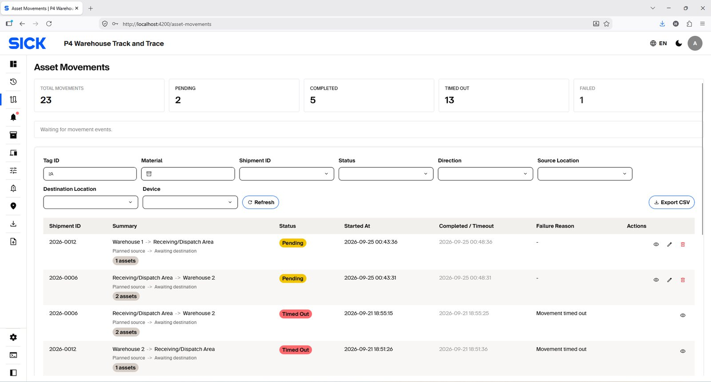
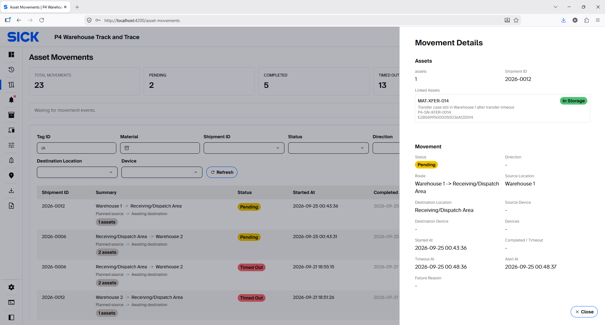
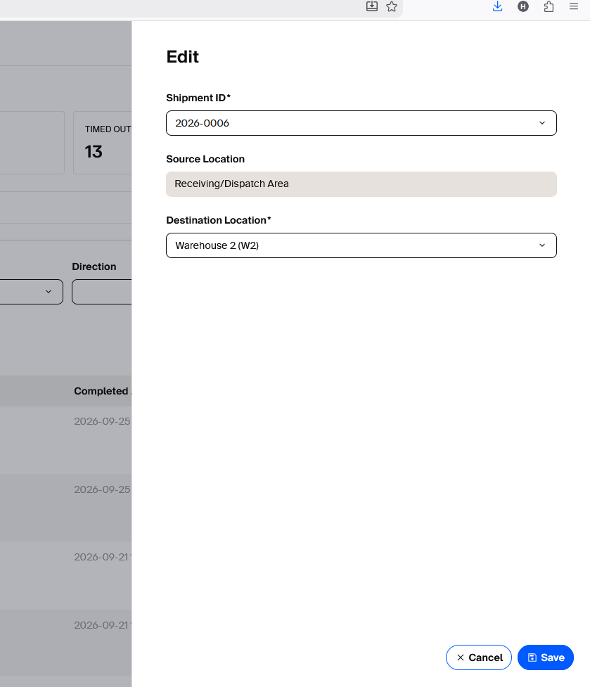
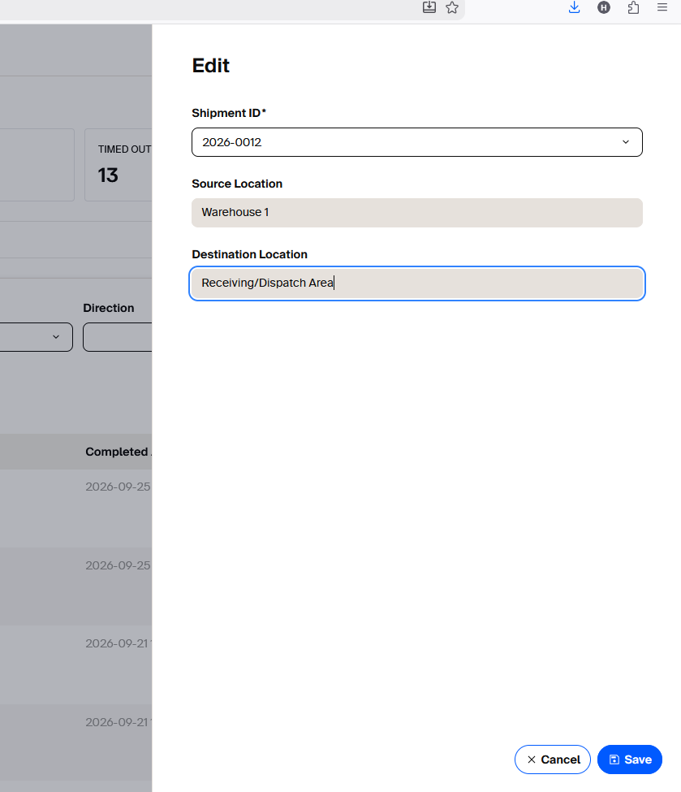
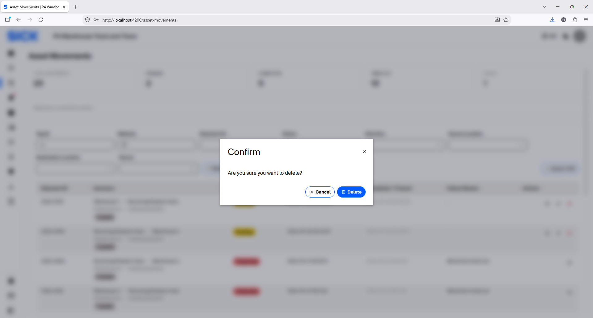

Asset Movements
Monitor planned movements and edit or delete records while they are still Pending.
Monitor Asset Movements
Use the status counters and filters to find a movement. Open a row to review source, destination, planned/completed time and failure reason.


What to do by status
| Status | Recommended action |
|---|---|
| PENDING | Review the planned Shipment, source and destination. While the record remains Pending, you may Edit the allowed fields or Delete the movement if it was created by mistake or is no longer required. Once the status changes, treat the record as operational history rather than a planning record. |
| COMPLETED | No action normally required. Verify Asset Location/Status if investigating. |
| TIMED_OUT | Check route/device connectivity and physical location. Review related Alert and Scan History. |
| FAILED | Read the failure reason; correct route/configuration/Shipment mismatch before retrying. |
| CANCELLED | Confirm a replacement plan is created only if the movement still needs to occur. |
Edit a Pending movement
A Pending record can be edited before the physical movement completes. Open the record and choose Edit; only allowed fields are enabled.
- Open Asset Movements and locate the required record with status Pending.
- Open the record and choose Edit.
- Review the Shipment ID, Source Location and Destination Location.
- Change only controls that are enabled. Source Location is normally shown as read-only context.
- Select Save, then confirm the updated movement Summary before moving the physical Assets.
Storage movement — Pending edit example
For a Storage movement, the configured receiving/source Location is shown as read-only context. Where permitted, the shipment ID and the Destination Location can be changed to another approved Warehouse while the record remains Pending.

Dispatch movement — Pending edit example
For Dispatch movement, Source Location shows the current Warehouse and Destination shows the configured Dispatch/Receiving area which are read-only context fields. Only the shipment ID field can be changed.

Delete a Pending movement
A movement can be deleted only while its status is PENDING. Use Delete when a movement request was created by mistake, is no longer required, or must be replaced with a different plan.
- Open Asset Movements and locate the required record.
- Confirm that its status is still PENDING.
- Open the record and choose Delete.
- Review the confirmation message and verify the Shipment, Source Location and Destination Location.
- Confirm the deletion.
- If the physical movement is still required, create a new movement request with the correct information.

When Delete is appropriate
| Situation | Recommended action |
|---|---|
| Movement was created by mistake | Delete it while it is still Pending. |
| Movement is no longer required | Delete it before the Assets begin the planned physical movement. |
| Shipment or destination needs a small allowed correction | Use Edit instead of deleting when the required field is available in the edit panel. |
| A different movement plan is required | Delete the incorrect Pending record, then create the correct movement request. |
| Status is no longer Pending | Do not delete it. Review the movement status, Scan Histories and related Alerts instead. |